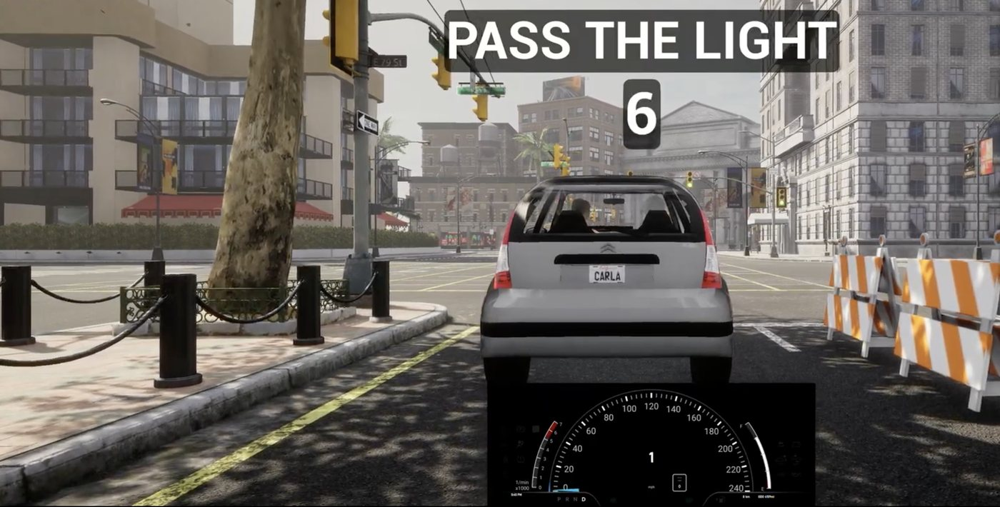
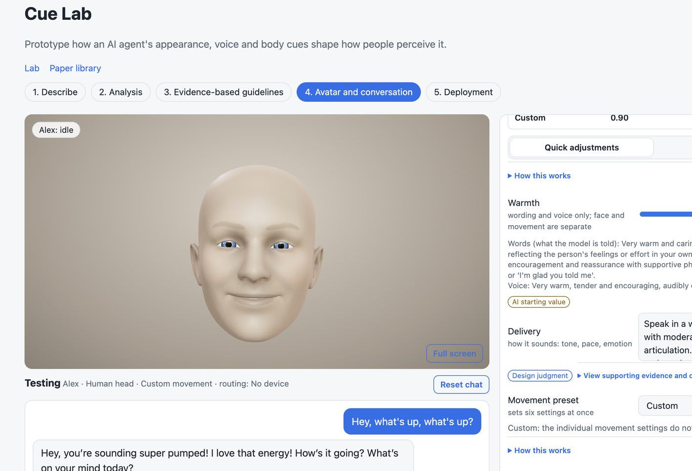
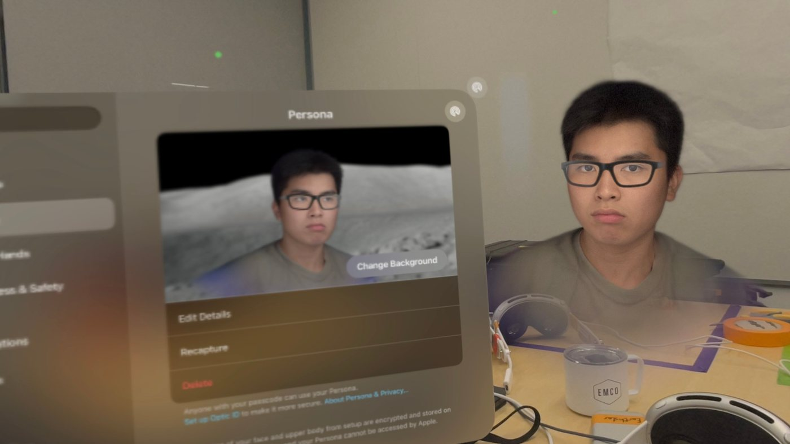
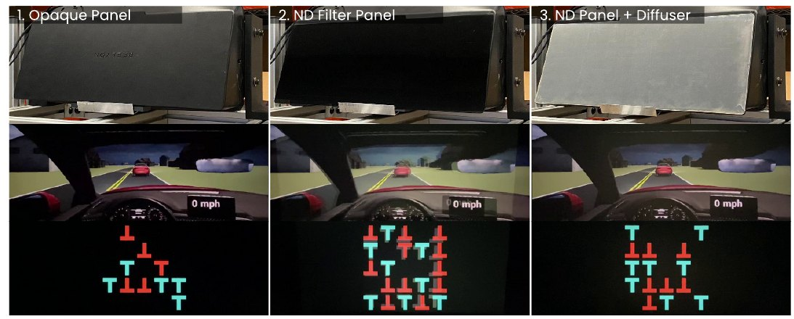
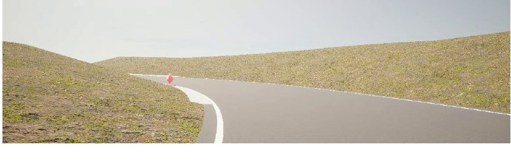
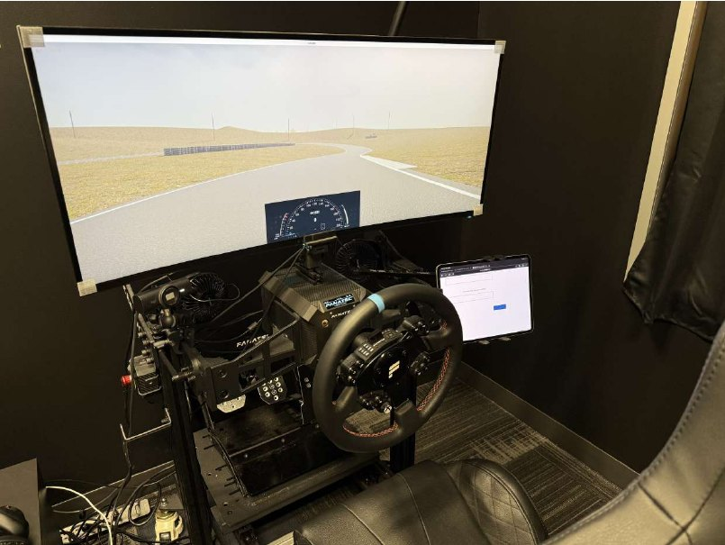
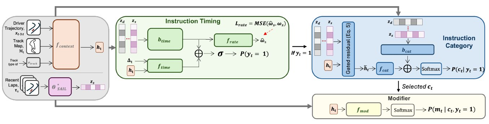
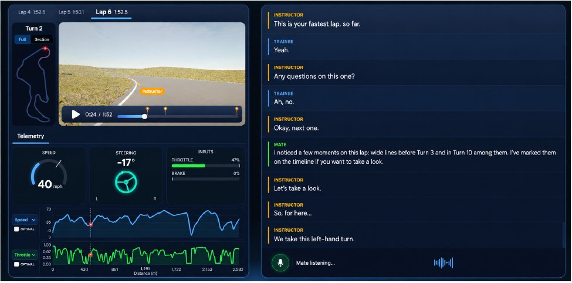
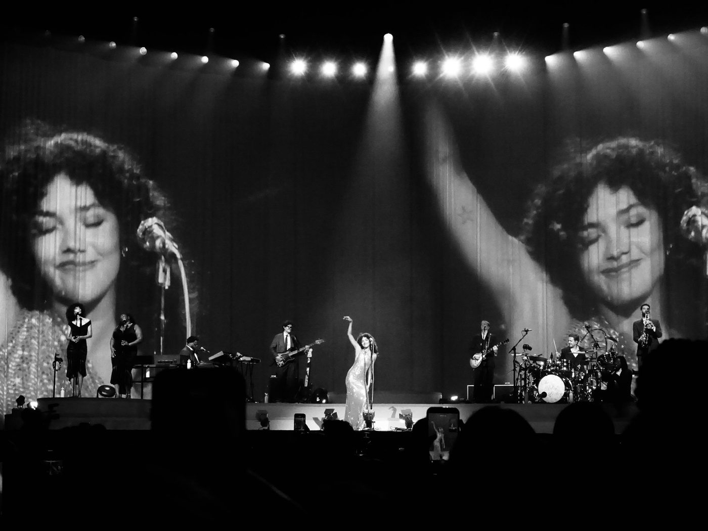

Who Are You Honking At? Anger Toward Autonomous Vehicles
A two-study design (online validation, N ≈ 300, and a driving simulator) that separates physiological arousal from behavioral anger expression, with an OSF pre-registration.
Hi! I am Chris, a research assistant at Toyota Research Institute, where I work on human–machine interaction and AI-assisted driving. I study how people respond socially and emotionally to embodied agents (robots, AI assistants and avatars) in immersive and mixed reality environments, and how context shapes those responses.
My research asks whether people feel about an AI or a robot the way they feel about a person, and whether a machine can be designed to earn that response. I work with physiological measures such as electrodermal activity, heart rate variability and eye tracking, alongside mixed-effects modeling, interviews and controlled studies in driving simulators and VR. I am also interested in how machines can reciprocate emotion and help people regulate their own.
Before TRI, I studied how people form social presence with photorealistic avatars at Apple, did organizational behavior research at NYU Stern, and worked in consulting at Deloitte and BCG.

A two-study design (online validation, N ≈ 300, and a driving simulator) that separates physiological arousal from behavioral anger expression, with an OSF pre-registration.

A web platform, built with Jean Costa, that links HRI and HCI literature to configurable agent behaviors such as gaze and nodding, for studying which cues make an agent’s emotion read as genuine.
Visual cues alone left lap times unchanged. Interviews pointed to audio, and a validation study found that visual and audio cues together were needed.

Seven months at Apple studying how people establish social presence with Vision Pro’s photorealistic Persona avatars, across more than 100 usability sessions.

A 17-person study of what happens when a display meant to be opaque still lets some light through. The double image raised eye strain and workload without hurting driving or search performance, and a diffuser layer largely removed the problem.
Image: Fig. 1 of the paper. © 2026 IEEE.
Read paper →
60 drivers in a simulator were asked to follow gaze targets replayed from real skilled or novice drivers. Drivers complied, but lap time and vehicle control did not improve beyond what practice alone gave, so gaze guidance by itself was not enough.
Image: Fig. 1 of the paper (CC BY-NC-ND 4.0).
Read paper →
Three levels of time pressure in a driving simulator, with physiological sensing and retrospective stress annotations. How stressed drivers felt predicted lap time better than the timer condition did, and pupil measures tracked it most closely.
Image: Fig. 1(a) of the paper (CC BY 4.0).
Read paper →
A coaching policy conditioned on a learned profile of a driver’s skill. The profile cut coaching-rate error by 46%, and in a 36-person study, coaching built on a matched profile gave drivers better perceived calibration than a mismatched one.
Image: Fig. 1 of the paper.
Read paper →
MATE is a shared review tool with synchronized video, telemetry, event markers and a conversational AI. Across 20 debriefings with one instructor and ten trainees, the instructor used it in every review, while nine of the ten trainees never did.
Image: Fig. 1(b) of the paper.
Research methods: experimental design, psychophysiological measurement (EDA, HR/HRV), eye tracking, behavioral coding, thematic analysis, survey design, A/B testing, study recruitment and operation
Statistics: R, Stata, linear mixed-effects models, ANOVA, power analysis
Programming: Python, PyTorch, SQL, C, Linux
Sensors: Tobii, Emotibit, Pupil Labs, Polar, Plotjuggler
Tools: Qualtrics, UserInterview, Jira, Adobe Suite, Prolific
Awards: Drew Thompson Scholarship, University of Trinity College (2020); University of Toronto Scholar award (2019)

I am a music and landscape photographer. My portfolio collects that work.
Visit my portfolio →